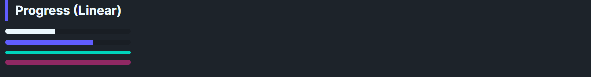

DaisyProgress is a styled progress bar with 8 color variants, 4 size presets, optional shimmer animation, and indeterminate support. It inherits ProgressBar behavior for Value, Minimum, Maximum, and IsIndeterminate, using theme colors for the indicator fill.
| Variant | Description |
|---|---|
| Default | Neutral bar; foreground uses base content color. |
| Primary / Secondary / Accent | Brand/secondary accents. |
| Info / Success / Warning / Error | Semantic fills for status-driven progress. |
| Size | Height | CornerRadius |
|---|---|---|
| ExtraSmall | 2 | 1 |
| Small | 4 | 2 |
| Medium (default) | 8 | 4 |
| Large | 16 | 8 |
The Shimmer property enables a subtle "breathing" animation on the progress fill. This creates a gentle opacity pulse (75%–100%) over a 2-second cycle, providing visual feedback that a process is active.
| Property | Type | Default | Description |
|---|---|---|---|
Shimmer |
bool |
false |
Enables a subtle breathing opacity animation on the fill. |
<!-- Determinate -->
<controls:DaisyProgress Value="40" />
<controls:DaisyProgress Value="60" Variant="Primary" />
<controls:DaisyProgress Value="80" Variant="Accent" Size="Large" />
<!-- Indeterminate -->
<controls:DaisyProgress IsIndeterminate="True" Variant="Secondary" />
<!-- With Shimmer animation -->
<controls:DaisyProgress Value="70" Variant="Primary" Shimmer="True" />
<controls:DaisyProgress Value="85" Variant="Success" Shimmer="True" />DaisyProgress includes built-in accessibility for screen readers via the AccessibleText property. The automation peer automatically announces the current percentage along with the accessible text.
| Property | Type | Default | Description |
|---|---|---|---|
AccessibleText |
string |
"Progress" |
Context text announced by screen readers (e.g., "Uploading file, 45%"). |
<!-- Default: announces "Progress, 40%" -->
<controls:DaisyProgress Value="40" />
<!-- Contextual: announces "Uploading file, 60%" -->
<controls:DaisyProgress Value="60" AccessibleText="Uploading file" />
<!-- Contextual: announces "Download progress, 80%" -->
<controls:DaisyProgress Value="80" AccessibleText="Download progress" Variant="Primary" />Success for completion, Warning for slow steps).Size="Small" or ExtraSmall to keep bars unobtrusive.ProgressBar layout.AccessibleText to provide context about what is loading (e.g., "Saving document" instead of generic "Progress").Shimmer="True" for active processes where you want subtle visual feedback that work is ongoing.